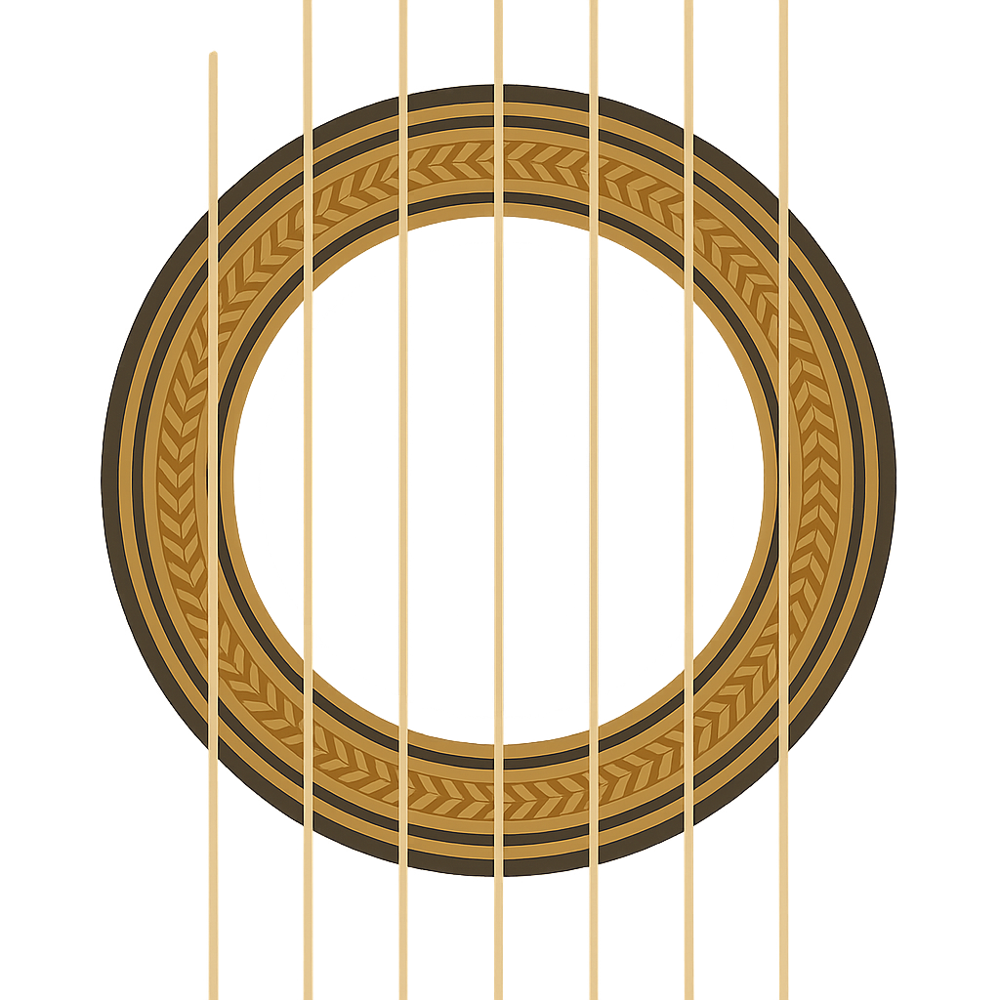

Clases
Arreglos
Videos
Contacto
Videos
Solista
Cielo abierto - Quique Sinesi
Acentuado - Astor Piazzola
Huajra - Athaulpa Yupanqui
Conciertos
Los descarados - Hit the road jack
Melicordes - CRD Mulhouse
Melicordes - Sol y sombra